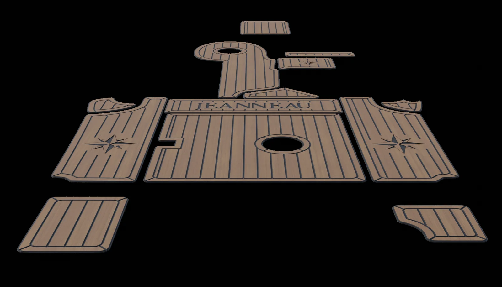

Digitalna izmjera broda
Prodim Prolinerom bilježimo rubove, otvore, poklopce i zaobljenja površina na koje postavljamo EVA umjetnu tikovinu.
Svaki brod ima svoje linije. Prolinerom ih pretvaramo u digitalnu osnovu za EVA oblogu izrađenu baš za vaše plovilo.
Proliner koristimo isključivo za izmjeru površina na koje ugrađujemo EVA umjetnu tikovinu.

Prodim Prolinerom bilježimo rubove, otvore, poklopce i zaobljenja površina na koje postavljamo EVA umjetnu tikovinu.
Izmjeru pretvaramo u digitalnu šablonu. Nacrt čuva oblik površine i služi kao osnova za pripremu panela.
Dogovaramo boju, smjer linija, obrube, logotipe i gravure. Digitalni prikaz olakšava usklađivanje detalja prije izrade.
Prema pripremljenom nacrtu režemo oblike i obrađujemo linije i gravure. Raspored elemenata na ploči planiramo radi smanjenja otpada.
Gotove panele postavljamo na pripremljene površine broda. Obloga prati izmjereni prostor i dogovoreni dizajn.

Mjerimo kokpite, pramčane površine, krmene platforme, stepenice, prolaze i poklopce. Digitalni nacrt povezuje izmjeru, dizajn i pripremu CNC proizvodnje.
Detalji površine zabilježeni za izradu obloge.
Linije, obrubi i gravure usklađuju se u digitalnom nacrtu.
Pripremljeni nacrt ostaje osnova vašeg projekta.

Imate ideju za svoje plovilo? Pošaljite nam fotografije i zajedno ćemo definirati oblogu koja mu pristaje.
Zatražite ponuduUpiti i dogovor putem WhatsAppa
Kako izgleda narudžba